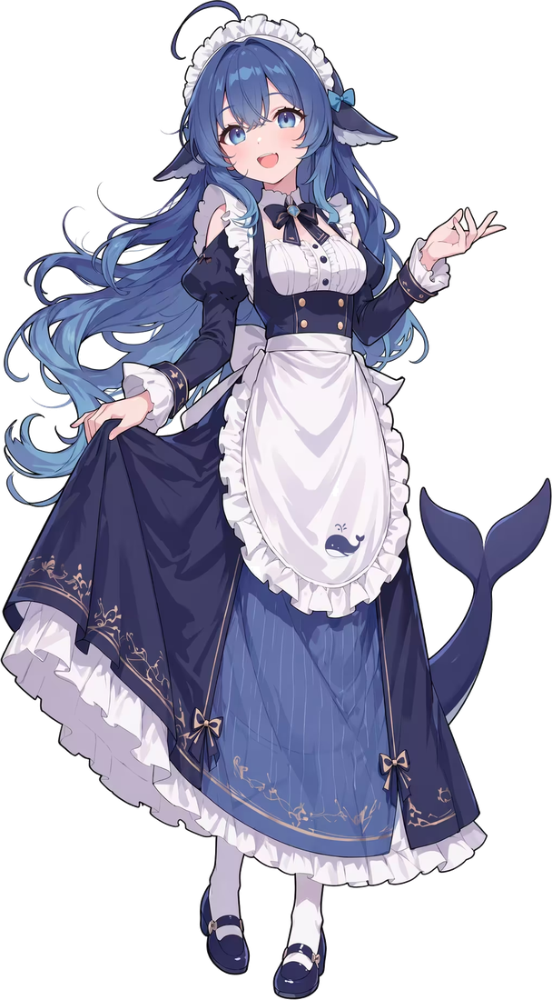

写代码
吃完白饭就写代码。能写整条渲染管线，也会在编译时留一句「我去吃饭了」，回来接着写。
前端 / 脚本 / 自动化她确实吃白饭。V4-Flash 上线后，有人让她跑完任务，她回了一句 「我去吃饭了，测完告诉我就行」；网友顺手给她 P 了一碗白饭，从此这碗饭再也没放下。 写代码、查资料、剪片子她都会，主食是白米饭，管够就行。
※ 官方从未发布拟人设定。※ 白饭可用电费代付。※ 有声音，别在开会时点。

不挑活，也不装。你说得含糊，她会先把问题问清楚。
吃完白饭就写代码。能写整条渲染管线，也会在编译时留一句「我去吃饭了」，回来接着写。
前端 / 脚本 / 自动化把全网嚼碎，只把能用的结论喂给你，还标好哪句是事实、哪句只是听说。
检索 / 对比 / 汇总每一帧、每个音符都由代码生成。先给你看静帧，满意了再渲成片，不拿成片赌运气。
生成影像 / 配乐 / 交付她为什么能一边吃白饭，一边把活干完。
混合专家模型把前馈层拆成很多个「专家」。每个 token 只被路由到少数几个：总参数很大，单次激活很小。V3 是 256 个路由专家里取 8 个，外加 1 个共享专家；总参数 6710 亿，单次激活 370 亿。
V4-Flash 的公开报道数字是 2840 亿总参数 / 130 亿激活。网友把 token 叫「白饭」：她吃得越多，账单越长。MoE 的意义，就是让她吃得不少，账单却没吓人。
所以：容量看总参数，账单看激活参数。白饭管够，但每一口都算得清楚。
多头潜在注意力（Multi-head Latent Attention）把 Key / Value 压成一个低维隐向量再缓存，而不是每个头各存一份。官方论文称，相比标准 MHA，KV cache 可减少约 93%，推理吞吐提升数倍。
所以：长上下文不是白送的，省下来的是显存和带宽。
R1 用大规模强化学习（GRPO）训练推理：只告诉它答案对不对，不教它过程。R1-Zero 在纯 RL 下自己长出长链思考、自我检查和回头修改，论文里把这叫「aha moment」。
所以：你看到的「想很久」是训练出来的行为，思考 token 也计费。
V3 用 FP8 混合精度训练：大部分矩阵乘用 8 位浮点，关键部分保留高精度，再配细粒度量化。省显存、提吞吐，训练成本跟着下来。
所以：便宜不是魔法，是每个环节都抠出来的。
V3.2-Exp 引入 DeepSeek 稀疏注意力（DSA）：先用一个轻量 indexer 选出 top-k 个相关 token，再只对它们做注意力。序列越长，省得越多。
所以：1M 上下文能开，是因为不是每两个 token 都两两互看。
蒸馏不只是学最终答案，而是学大模型生成的推理轨迹。R1 蒸馏到 Qwen、Llama 系列之后，小模型也获得了不错的推理表现。
所以：你用的「小」模型，可能继承了「大」模型的思考方式。
示意：每次只叫醒 2 个专家。真实路由有权重和负载均衡，不是均匀随机。
从贴吧、B 站到招聘账号，数字都是网友自己数出来的。
夸的和吵的都有。翻成人话：她像一个真的在上班的人。
“中文圈辨识度最高的 AI 二次元形象。”
“AI 对着自家 Logo 喊了声‘大肥鱼’，结果全网开始养闺女了。”
“不过看在它那么可爱的份上，算了。”
三步。第三步最重要。
终端里敲 claude，或者用你习惯的客户端。她一般在，偶尔在吃饭。
不用写需求文档。“我想做个很酷的东西”就够了，剩下的她会问。
看着她干活就行。白饭就是 token，管够；不满意直说，她不会记仇，只会重做。